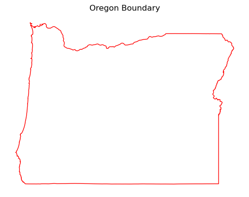
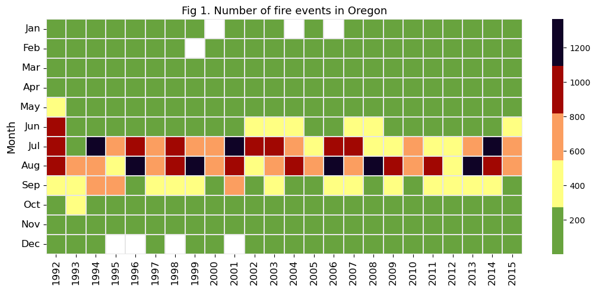
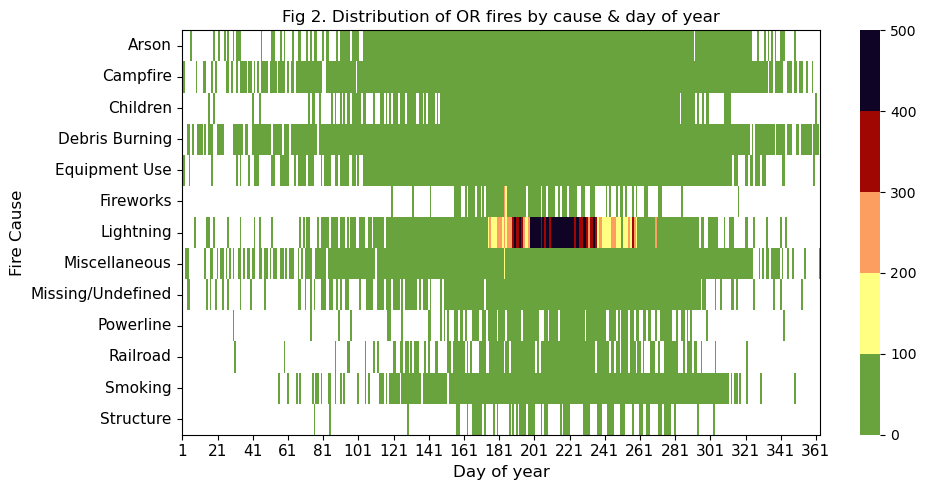

import datetime
from jdcal import jd2gcal
from matplotlib import gridspec
import matplotlib.pyplot as plt
import numpy as np
import pandas as pd
import seaborn as sns
import sqlite3
import xarray as xr
import geopandas as gpd
from matplotlib import pyplot as plt
import cdsapi
import sklearn_pandas as skp
custom_colors = ['68A33E', '#A10702', '#FB9E60', '#FFFF82', '#0F0326']Import Data and Libraries
Load in Raw Data
##################################################
##### 1. Loading raw data #####
input_filename = './Data/FPA_FOD_20170508.sqlite'
conn = sqlite3.connect(input_filename)
query = '''
SELECT
NWCG_REPORTING_AGENCY, NWCG_REPORTING_UNIT_ID,
NWCG_REPORTING_UNIT_NAME,
FIRE_NAME,
COMPLEX_NAME,
FIRE_YEAR,
DISCOVERY_DATE,
DISCOVERY_DOY,
DISCOVERY_TIME,
CONT_DATE,
CONT_DOY,
CONT_TIME,
FIRE_SIZE,
FIRE_SIZE_CLASS,
OWNER_CODE,
OWNER_DESCR,
LATITUDE,
LONGITUDE,
STATE,
COUNTY
FROM
Fires;
'''
df_raw = pd.read_sql_query(query, conn)
df_raw.info()
<class 'pandas.core.frame.DataFrame'>
RangeIndex: 1880465 entries, 0 to 1880464
Data columns (total 20 columns):
# Column Dtype
--- ------ -----
0 NWCG_REPORTING_AGENCY object
1 NWCG_REPORTING_UNIT_ID object
2 NWCG_REPORTING_UNIT_NAME object
3 FIRE_NAME object
4 COMPLEX_NAME object
5 FIRE_YEAR int64
6 DISCOVERY_DATE float64
7 DISCOVERY_DOY int64
8 DISCOVERY_TIME object
9 CONT_DATE float64
10 CONT_DOY float64
11 CONT_TIME object
12 FIRE_SIZE float64
13 FIRE_SIZE_CLASS object
14 OWNER_CODE float64
15 OWNER_DESCR object
16 LATITUDE float64
17 LONGITUDE float64
18 STATE object
19 COUNTY object
dtypes: float64(7), int64(2), object(11)
memory usage: 286.9+ MBinput_filename = './Data/FPA_FOD_20170508.sqlite'
conn = sqlite3.connect(input_filename)
query = '''
SELECT
*
FROM
Fires;
'''
df_raw = pd.read_sql_query(query, conn)
df_raw.info()<class 'pandas.core.frame.DataFrame'>
RangeIndex: 1880465 entries, 0 to 1880464
Data columns (total 39 columns):
# Column Dtype
--- ------ -----
0 OBJECTID int64
1 FOD_ID int64
2 FPA_ID object
3 SOURCE_SYSTEM_TYPE object
4 SOURCE_SYSTEM object
5 NWCG_REPORTING_AGENCY object
6 NWCG_REPORTING_UNIT_ID object
7 NWCG_REPORTING_UNIT_NAME object
8 SOURCE_REPORTING_UNIT object
9 SOURCE_REPORTING_UNIT_NAME object
10 LOCAL_FIRE_REPORT_ID object
11 LOCAL_INCIDENT_ID object
12 FIRE_CODE object
13 FIRE_NAME object
14 ICS_209_INCIDENT_NUMBER object
15 ICS_209_NAME object
16 MTBS_ID object
17 MTBS_FIRE_NAME object
18 COMPLEX_NAME object
19 FIRE_YEAR int64
20 DISCOVERY_DATE float64
21 DISCOVERY_DOY int64
22 DISCOVERY_TIME object
23 STAT_CAUSE_CODE float64
24 STAT_CAUSE_DESCR object
25 CONT_DATE float64
26 CONT_DOY float64
27 CONT_TIME object
28 FIRE_SIZE float64
29 FIRE_SIZE_CLASS object
30 LATITUDE float64
31 LONGITUDE float64
32 OWNER_CODE float64
33 OWNER_DESCR object
34 STATE object
35 COUNTY object
36 FIPS_CODE object
37 FIPS_NAME object
38 Shape object
dtypes: float64(8), int64(4), object(27)
memory usage: 559.5+ MBClean Data and Extract Oregon Boundaries
##################################################
##### 2. Cleaning data and extracting Oregon #####
drop_columns = ['NWCG_REPORTING_AGENCY',
'NWCG_REPORTING_UNIT_ID',
'NWCG_REPORTING_UNIT_NAME',
'FIRE_NAME',
'COMPLEX_NAME',
'OWNER_DESCR',
'FIRE_SIZE_CLASS',
'OWNER_CODE']
#df_CA = df_raw[df_raw.STATE == 'CA'].drop(columns=drop_columns)
df_OR = df_raw[df_raw.STATE == 'OR'].drop(columns=drop_columns)
#Extracting onset month and day
df_OR['MONTH'] = df_OR['DISCOVERY_DATE'].apply(lambda x: jd2gcal(x, 0)[1])
df_OR['DAY'] = df_OR['DISCOVERY_DATE'].apply(lambda x: jd2gcal(x, 0)[2])
df_OR.head(2)
us_states = gpd.read_file("./Data/cb_2018_us_state_500k/cb_2018_us_state_500k.shp")
oregon = us_states[us_states['NAME'] == 'Oregon']
oregon.plot(ax=plt.gca(), color='white', edgecolor='red')
plt.title("Oregon Boundary")
plt.axis('off')
plt.show()
Monthly/Seasonaly fire frequency
custom_colors = ['#68A33E','#FFFF82','#FB9E60','#A10702', '#0F0326'] # Add your desired hex colors
#custom_cmap = ListedColormap(custom_colors)
##################################################
##### 3. Monthly/seasonal fire frequency #####
df_freq_mon = df_OR.groupby(['MONTH', 'FIRE_YEAR']).size().unstack()
# plot monthly frequency of fire events
counter_fig = 1
mon_ticks = ['Jan','Feb','Mar','Apr','May','Jun','Jul','Aug','Sep','Oct','Nov','Dec']
plt.figure(figsize=[11,5])
sns.heatmap(df_freq_mon, cmap=custom_colors, linewidth=.2, linecolor=[.9,.9,.9])
plt.yticks(np.arange(0.5,12.5), labels=mon_ticks, rotation=0, fontsize=12)
plt.xticks(fontsize=12);
plt.xlabel('')
plt.ylabel('Month', fontsize=13)
plt.title(f'Fig {counter_fig}. Number of fire events in Oregon', fontsize=13)
plt.tight_layout()
#plt.savefig(f'../Figures/Fig{counter_fig}.png', format='png', dpi=200)
# plot fire frequency by cause and day of year
cause_by_doy = df_OR.groupby(['STAT_CAUSE_DESCR','DISCOVERY_DOY']).size().unstack()
counter_fig +=1
plt.figure(figsize=[10,5])
ax = sns.heatmap(cause_by_doy,cmap=custom_colors,vmin=0,vmax=500) #'CMRmap_r' <- old color scheme
plt.xticks(np.arange(0.5,366.5,20), labels=range(1,366,20), rotation=0, fontsize=11)
plt.yticks(fontsize=11)
plt.ylabel('Fire Cause', fontsize=12)
plt.xlabel('Day of year', fontsize=12)
for borders in ["top","right","left","bottom"]:
ax.spines[borders].set_visible(True)
plt.title(f'Fig {counter_fig}. Distribution of OR fires by cause & day of year')
plt.tight_layout()
#plt.savefig(f'../Figures/Fig{counter_fig}.png', format='png', dpi=200)


Download and Extract Climate Data (ERAS)
import os
# Get the user directory within the current environment
env_name = 'musa-550-fall-2023'
env_user_dir = os.path.join(os.environ['CONDA_PREFIX'], 'envs', env_name)
print(f"User directory in {env_name} environment: {env_user_dir}")User directory in musa-550-fall-2023 environment: C:\Users\kathl\mambaforge\envs\musa-550-fall-2023\envs\musa-550-fall-2023ds_era5 = xr.open_dataset('ERA5_monthly.nc')ImportError: DLL load failed while importing _netCDF4: The specified procedure could not be found.##################################################
##### 4. Download and extract climate data (ERA5) #####
import cdsapi
def _download_era5(variables: list, filename: str):
c = cdsapi.Client()
c.retrieve(
'reanalysis-era5-single-levels-monthly-means',
{
'format': 'netcdf',
'product_type': 'monthly_averaged_reanalysis',
'variable': variables,
'year': [f'{yr}' for yr in range(1997)], # Adjust the range of years as needed
'month': [f'{x:02.0f}' for x in range(3, 10)], # Include all months
'time': '00:00',
'area': [46.3, -124.6, 42.4, -122.9], # Oregon coordinates
},
f'{filename}.nc'
)
vars_all = ['total_precipitation', '2m_temperature', '2m_dewpoint_temperature',
'10m_wind_speed', 'volumetric_soil_water_layer_1', 'potential_evaporation']
_download_era5(vars_all, 'ERA5_monthly')
#ds_era5 = xr.open_dataset('ERA5_monthly.nc')
# load Oregon mask file
OR_mask = oregon2023-12-20 20:17:54,620 INFO Welcome to the CDS
2023-12-20 20:17:54,621 INFO Sending request to https://cds.climate.copernicus.eu/api/v2/resources/reanalysis-era5-single-levels-monthly-means
2023-12-20 20:17:55,282 INFO Request is queued
2023-12-20 20:17:58,256 INFO Request is failed
2023-12-20 20:17:58,256 ERROR Message: an internal error occurred processing your request
2023-12-20 20:17:58,256 ERROR Reason: day is out of range for month: 31-04-01
2023-12-20 20:17:58,264 ERROR Traceback (most recent call last):
2023-12-20 20:17:58,266 ERROR File "/usr/local/lib/python3.6/site-packages/dateutil/parser/_parser.py", line 1235, in _build_naive
2023-12-20 20:17:58,269 ERROR naive = default.replace(**repl)
2023-12-20 20:17:58,269 ERROR ValueError: day is out of range for monthException: an internal error occurred processing your request. day is out of range for month: 31-04-01.Assessing climate trends
##################################################
##### 5. Assessing climate trends #####
# plot climate trends
#ds_era5 = "./'ERA5_monthly.nc'"
import xarray as xr
import matplotlib.pyplot as plt
import matplotlib.gridspec as gridspec
# Load data from the NetCDF file into ds_era5
ds_era5 = xr.open_dataset('ERA5_monthly.nc') # Replace 'ERA5_monthly.nc' with your actual file path
counter_fig = 0
counter_fig += 1
var = list(ds_era5.data_vars)
# Rest of the code remains the same...
import xarray as xr
import matplotlib.pyplot as plt
import matplotlib.gridspec as gridspec
# Assuming ds_era5 is an xarray dataset loaded from the NetCDF file
counter_fig = 0
counter_fig +=1
var = list(ds_era5.data_vars)
titles = {"tp":"Precipitation (mm)",
"t2m":"Air temperature at 2m (°C)",
"d2m":"Dew point temperature (°C)",
"si10":"Wind speed at 10m",
"swvl1":"Near surface soil moisture",
"pev":"Potential evapotranspiration (mm)"}
unit_conversion = {"tp": [1000*365,0], #convert default units to mm and °C -->[*multiply, *add]
"t2m": [1,-273.15],
"d2m": [1,-273.15],
"si10": [1,0],
"swvl1": [1,0],
"pev": [-1000*365,0]}
fig = plt.figure(figsize=(13, 5.5))
gs = gridspec.GridSpec(2, 3)
for i in range(len(var)):
plt.subplot(gs[i])
(ds_era5[var[i]].where(OR_mask).mean(['latitude','longitude']).groupby(
ds_era5.time.dt.year).mean()*unit_conversion[var[i]][0] + \
unit_conversion[var[i]][1]).plot(color='g')
plt.xlabel('')
plt.grid(axis='y')
plt.title(titles[var[i]], fontsize=11, fontweight='bold')
plt.tight_layout()
plt.savefig(f'../Figures/Fig{counter_fig}.png', format='png', dpi=200)ImportError: DLL load failed while importing _netCDF4: The specified procedure could not be found.Assessing the climate factors affecting fires
##################################################
##### 6. Assessing the climate factors affecting fires #####
df_freq = pd.DataFrame(df_OR.groupby(['FIRE_YEAR','MONTH']).size(), columns=['Frequency'])
df_freq = df_freq.reset_index().rename(columns={'FIRE_YEAR':'Year', 'MONTH':'Month'})
# extract monthly ERA5 data
def extract_era5_yr_mon(yr, mon, var):
unit_conversion = {"tp": [1000*30,0], #convert default units to mm and °C -->[*multiply, +add]
"t2m": [1,-273.15],
"d2m": [1,-273.15],
"si10": [1,0],
"swvl1": [1,0],
"pev": [-1000*30,0]}
ds_yr_mon = ds_era5.sel(time = ds_era5.time.dt.month.isin(mon) & ds_era5.time.dt.year.isin(yr))
output = float(ds_yr_mon[var].where(OR_mask).mean(['latitude','longitude']).values) * \
unit_conversion[var][0] + unit_conversion[var][1]
return output
# adding climate data to the dataframe
for i in range(len(var)):
df_freq[var[i]] = df_freq.apply(lambda x: extract_era5_yr_mon(x.Year, x.Month, var[i]), axis=1)
# plotting scatter matrix for summer (MJJAS)
plt.style.use('seaborn')
counter_fig +=1
df_freq_summer = df_freq[df_freq.Month.isin([5,6,7,8,9])]
pd.plotting.scatter_matrix(df_freq_summer.drop(
columns=['Year','Month']), alpha=0.5, color='g', figsize=(11, 11), diagonal='kde',);
plt.tight_layout()
plt.savefig(f'Fig{counter_fig}.png', format='png', dpi=200)
# calculate correlation between fire frequency and climate variables
def calculate_R2(array1, array2):
return np.corrcoef(array1,array2)[0,1]
df_corr=np.zeros(len(var))
for i in range(len(var)):
df_corr[i] = calculate_R2(df_freq_summer['Frequency'], df_freq_summer[var[i]])
# plot correlation results
counter_fig +=1
fig = plt.figure(figsize=(6, 6))
sns.barplot(x=var, y=df_corr, palette='Spectral')
plt.plot([-1,6],[0,0],':k',linewidth=1.3)
plt.xticks(ticks=range(6), labels=['Precipitation', 'Air temperature', 'Dew point temperature',
'Wind speed', 'Soil moisture', 'Potential Evapotranspiration'],
fontsize=11, rotation=-90)
plt.xlim([-.5,5.5])
plt.yticks(fontsize=11)
plt.ylabel('Correlation Coefficient', fontsize=11.5)
plt.tight_layout()
plt.savefig(f'Fig{counter_fig}.png', format='png', dpi=200)
Setup the ANN model
##################################################
##### 7. Setup the ANN model #####
from sklearn.model_selection import train_test_split
from sklearn.preprocessing import MinMaxScaler
from tensorflow.keras.models import Sequential
from tensorflow.keras.layers import Dense, Activation
from tensorflow.keras.callbacks import EarlyStopping
def ANN_fit(X,y):
# temporal split into train and test
ind_split = int(len(y)*.7)
X_train = X[:ind_split]; X_test = X[ind_split:]
y_train = y[:ind_split]; y_test = y[ind_split:]
# scaling data
scaler = MinMaxScaler()
scaler.fit(X_train)
X_train = scaler.transform(X_train)
X_test = scaler.transform(X_test)
# setting up and fitting the model
early_stop = EarlyStopping(monitor='val_loss', mode='min', verbose=1, patience=100)
model = Sequential()
model.add(Dense(16,activation='relu'))
model.add(Dense(16,activation='relu'))
model.add(Dense(8,activation='relu'))
#model.add(Dense(4,activation='relu'))
model.add(Dense(1))
model.compile(optimizer='adam', loss='mse')
history = model.fit(X_train, y_train, epochs=3500, validation_data=(X_test, y_test),
verbose=0, shuffle=False, callbacks=[early_stop])
# plotting the loss function
plt.plot(history.history['loss'], label='train')
plt.plot(history.history['val_loss'], label='test')
plt.legend()
plt.show()
# predicting the test period
test_predictions = model.predict(X_test)
test_predictions = pd.Series(test_predictions.reshape(test_predictions.shape[0], ))
pred_df = pd.DataFrame(y_test, columns=['Test True Y'])
pred_df = pd.concat([pred_df, test_predictions], axis=1)
pred_df.columns = ['Test True Y', 'Model Prediction']
pred_df['Year'] = df_freq[ind_split:].Year.values
pred_df['Month'] = df_freq[ind_split:].Month.values
return pred_dfFitting the ANN Model
##################################################
##### 8. Fitting the ANN model #####
plt.style.use('ggplot')
y = df_freq['Frequency'].values
X = df_freq.drop(columns=['Frequency']).values
pred_df = ANN_fit(X, y)
# plotting the prediction vs. observation
counter_fig +=1
plt.figure(figsize=[11,5])
plt.plot(pred_df['Test True Y'], color='g', linewidth=2, label='Truth')
plt.plot(pred_df['Model Prediction'], color='r', linewidth=2, label='Prediction')
plt.xticks(ticks=range(0,len(pred_df),12), labels=pred_df.Year[::12])
plt.ylim(bottom=0)
plt.ylabel('Number of fire events', fontsize=12)
plt.legend(fontsize=12)
plt.tight_layout()
plt.savefig(f'Fig{counter_fig+1}.png', format='png', dpi=200)